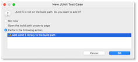
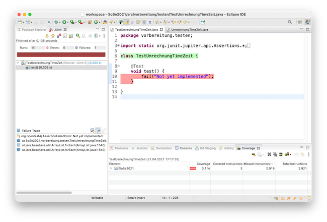

JUnit-Tests¶
Testen von Programmen ist wichtig. Ohne Testen ist es kaum möglich, Fehler in Programmen zu entdecken. Bis jetzt haben wir unsere Programme immer durch reines Anwenden getestet, d.h. wir haben die implementierten Methoden aufgerufen und ihnen unterschiedliche Parameterwerte übergeben. Wir werden das jetzt ändern und nutzen dafür JUnit.
Allgemeines zum (Unit-)Testen¶
Der berühmte Informatiker Edsger W. Dijkstra hat über das Testen gesagt:
Durch Testen kann man stets nur die Anwesenheit, nie aber die Abwesenheit von Fehlern beweisen
Das bedeutet, wir können durch das Testen Fehler finden. Wenn wir aber keine finden, dann wissen wir nicht, ob das Programm dann auch keine Fehler mehr enthält. Es ist leider nicht möglich, grundsätzlich die Fehlerfreiheit von Programmen zu prüfen. Aber das Testen stellt ein wichtiges Werkzeug dar, um Fehler zu entdecken.
Es gibt verschiedene Arten von Tests:

In der Abbildung erkennen wir, dass die Unit-tests, die wir hier kennenlernen wollen, am besten automatisierbar, am häufigsten und am einfachsten sind. Mit Unit-Tests können wir Methoden und Klassen testen, wobei wir die Tests implementieren. Die Idee ist, dass wir funktionale Einzelteile eines Programms separat und isoliert vom Rest auf ihre Korrektheit hin überprüfen. Wir versuchen extra, so wenig wie möglich die Effekte anderer Funktionalitäten bzw. Komponenten in die Tests einfließen zu lassen. Das erfolgt dann in den Komponenten- bzw. Integrationstests. Das hat zwei Vorteile: einerseits ist der zu prüfende Funktionsumfang überschaubar und andererseits können diese Unit-Tests leicht automatisiert ausgeführt werden. Es gibt, wie bereits eingangs erwähnt, keine Garantie von Fehlerfreiheit. Ein Nachteil der Unit-Tests besteht darin, dass sie schwierig für Methoden zu gestalten sind, in denen es Abhängigkeiten von der Laufzeitumgebung oder anderen Komponenten gibt.
Test-Driven Development¶
Unit Tests können entweder nach Erstellung des Programmcodes geschrieben werden, um diesen nachträglich zu testen oder vor Erstellung des Programmcodes. Wenn wir die Tests vor der Erstellung des Programmcodes erstellen, dann beschreiben wir mit den Tests die Anforderungen an den zu erstellenden Code. Wir werden hier lernen, wie die Erstellung der Tests und des Programmcodes Hand-in_Hand erfolgen können. Diese Vorgehensweise nennt sich Test-driven developement (TDD).
Wir werden, wie üblich, TDD anhand eines Beispiels einführen. Unser Vorgehen lässt sich wie folgt beschreiben:
- Wir schreiben einen Test, der die Anforderung für einen möglichst kleinen iterativen Schritt bei der Erstellung des Programmcodes beschreibt.
- Wir schreiben möglichst wenig Programmcode, so dass der Test genau erfüllt wird.
- Wir gehen wieder zu 1. und beschreiben den nächsten möglichst kleinen iterativen Schritt durch einen Test.
- Wir wiederholen 2. für den neuen Test usw.
Die folgende Abbildung visualisiert das Vorgehen.

Ausgangspunkt ist immer ein Test. Wir implementieren solange, bis dieser und alle vorher implementierten Tests erfolgreich durchlaufen werden. Dann schreiben wir einen weiteren Test und implementieren wieder so lange, bis dieser und alle vorher geschreibenen Tests erfolgreich durchlaufen werden. Dieses Vorgehen wird so lange wiederholt, so lange wir weitere Testfälle hinzufügen können, die jeweils neue Anforderungen beschreiben. Zur Implementierung des Codes gehört auch das Refactoring, d.h. wir verbessern bisher geschriebenen Code durch neue Tests.
TDD für einen Time-Zeit-Umrechner¶
Angenommen, wir wollen einen einfachen Konverter erstellen, der eine Uhrzeit im 12-Stunden-Zeitsystem (mit am und pm) in eine 24-Stundendarstellung umwandelt (von String nach String). Im Web findet man einige Beispiel, z.B. hier. Dazu erstellen wir uns zunächst eine Klasse UmrechnungTimeZeit.java, die die Methode convert() enthält. Diese Methode erwartet einen String mit einer 12-Stunden-Zeit time und gibt einen String zurück, der die time im 24-Stundenformat darstellt.
public class UmrechnungTimeZeit {
public String convert(String time)
{
return "";
}
}
Das ist unsere Klasse in der Augangssituation. Bevor wir anfangen, zu implemntieren, wollen wir uns zunächst einen ersten einfachen Test schreiben, der uns eine erste Anforderung (einen ersten Testfall) beschreibt. Dazu wählen wir in Eclipse File --> New --> JUnit Test Case. Es erscheint folgendes Fenster:

Wir wählen New JUnit Jupiter test aus und benennen unsere Testklasse TestUmrechnungTimeZeit und geben an, dass die Class under test die Klasse UmrechnungTimeZeit ist (Auswahl durch Browse...). Wenn wir dann auf Finish klicken, erscheint:

Das bestätigen wir mit OK. Es wird die TestUmrechnungTimeZeit.java erstellt, die so aussieht:
import static org.junit.jupiter.api.Assertions.*;
import org.junit.jupiter.api.Test;
class TestUmrechnungTimeZeit {
@Test
void test() {
fail("Not yet implemented");
}
}
Sollten Fehler beim Import der junit.jupiter-Pakete angezeigt werden, dann müssen Sie in Ihre module-info.java noch folgende Anweisung einfügen:
requires org.junit.jupiter.api;
Eine JUnit-Testklasse¶
Die Klasse TestUmrechnungTimeZeit.java ist eine JUnit-Testklasse. Eine JUnit-Testklasse enthält keine main()-Methode, ist aber ausführbar. Sie enthält stattdessen Methoden, die mit @Test annotiert sind. Diese @Test-Methoden enthalten Zusicherungen (sogenannte Assertions). Mit diesen Assertions geben Sie das erwartete Ergebnis des Testfalls an.
Assertions¶
Es gibt unterschiedliche Möglichkeiten, das tatsächliche Ergebnis der Ausführung mit dem erwarteten Ergebnis zu vergleichen:
- Gleichheit, Ungleichheit, kleiner, größer
null, nichtnull- gleiche Objekte (
equals())
Diese Vergleiche werden mittels Assertions durchgeführt. Folgende Tabelle gibt einen Überblick über einige der am meisten verwendeten Assertions an. Alle Assertions, die es gibt, finden Sie hier.
| Assertion | Beschreibung |
|---|---|
fail(message) |
Lässt den Test scheitern (fail) mit Nachricht message. Wird genutzt, um zu überprüfen, ob Code unerreichbar ist oder bevor der Test implementiert ist. |
assertTrue(cond,m) |
Überprüft, ob Bedingung cond wahr ist oder scheitert mit Nachricht m |
assertFalse(cond,m) |
Überprüft, ob Bedingung cond false ist oder scheitert mit Nachricht m |
assertEquals(a,b,m) |
Überprüft, ob Parameter a und b gleich sind oder scheitert mit Nachricht m |
assertArrayEquals(a,b,m) |
Überprüft, ob Inhalte der Arrays a und b gleich sind oder scheitert mit Nachricht m |
assertNull(o,m) |
Überprüft, ob Object o==null ist oder scheitert mit Nachricht m |
assertNotNull(o,m) |
Überprüft, ob Object o!=null ist oder scheitert mit Nachricht m |
assertSame(o1,o2,m) |
Überprüft, ob Objektreferenz o1==o2 ist oder scheitert mit Nachricht m |
assertNotSame(o1,o2,m) |
Überprüft, ob Objektreferenz o1!=o2 ist oder scheitert mit Nachricht m |
Derzeit verwenden wir in unserer Testklasse nur die Assertion fail(). Diese steht aber nur dafür, dass wir diesen Test noch implementieren müssen. Das machen wir jetzt.
Eine erste Testmethode für unser Beispiel¶
Zunächst einmal schauen wir uns an, wie wir unsere Testklasse ausführen. Dazu wählen wir in Eclipse unter Run --> Run As ... --> JUnit Test. Oder Sie wählen gleich den mittleren der gezeigten drei Buttons  . Dann erhalten Sie folgendes Bild:
. Dann erhalten Sie folgendes Bild:

Auf der linken Seite sehen Sie im JUnit-Reiter einen roten Querbalken. Dieser zeigt an, dass ein Test fehlgeschlagen ist. Im Editor-Fenster wird der fehlgeschlagene Test rot markiert. Es ist klar, dass der Test fehlschlägt, denn das bezweckt ja die Assertion fail(). Links unten sieht man den Failure trace. Dort ist in der ertsen Zeile die Fehlermeldung Not yet implemented zu sehen - das ist die Nachricht, die der fail()-Assertion übergeben wurde.
Wir implementieren nun die erste Testmethode. Dazu benennen wir die Methode test() um in testConvert1amTo1(). In unserem ersten Test wollen wir überprüfen, ob unsere Methode convert(String time) korrekt arbeitet, wenn ihr der String 1:00 am übergeben wird. Die Idee ist nun die folgende: wir definieren unsere Testmethode so, dass wir angeben, welches Ergebnis wir erwarten, wenn der String 1:00 am übergeben wird. Wir erwarten das Ergebnis 1:00.
Generell sollte eine Testmethode in der folgenden Form aufgebaut sein:
given (preperation): gibt die Voraussetzungen des Tests an, z.B. die Erzeugung eines Objektes; bei uns: die Erzeugung einesUmrechnungTimeZeit-Objektes,when (execution): beschreibt, was und wie ausgeführt werden soll; bei uns: die Ausführung der Methodeconvert()mit dem Parameterwert"1:00 am",then (verification): beschreibt, wie sich das Ergebnis der Ausführung in Bezug auf das erwartete Ergebnis verhalten soll; bei uns:assertEquals(tatsaechlichesErgebnis, "1:00").
Nach Umbenennung der Methode test() in TestUmrechnungTimeZeit.java in testConvert1amTo1(String time) und Implementierung dieser Methode sieht die Klasse TestUmrechnungTimeZeit.java nun so aus:
1 2 3 4 5 6 7 8 9 10 11 12 13 14 15 16 17 18 | |
In der Testmethode erzeugen wir uns also zunächst ein Objekt von UmrechnungTimeZeit, damit wir die Objektmethode convert() überhaupt aufrufen können (Zeile 9). Dann rufen wir die convert()-Methode auf und übergeben ihr den String "1:00 am". Das Ergebnis der Methode wird in der Variablen zeit gespeichert (Zeile 12). Dann vergleichen wir das tatsächliche Ergebnis (zeit) mit dem erwarteten Ergebnis ("1:00") und wollen, dass beide gleich sind (assertEquals()).
Somit haben wir einen möglichst kleinen iterativen Schritt hin zur fertigen Implementierung als Test beschrieben. Unsere nächste Aufgabe ist nun, möglichst wenig Programmcode zu schreiben, so dass der Test genau erfüllt wird. Diese Aufgabe erledigen wir auf ganz simple Weise, indem unsere convert()-Methode einfach den String "1:00" zurückgibt.
1 2 3 4 5 6 7 8 | |
Das erscheint uns auf den ersten Blick völlig sinnlos - und das ist es natürlich irgendwie auch. Aber wir erinnern uns: wir wollen möglichst wenig Programmcode schreiben, so dass der Test genau erfüllt wird. Und das machen wir hier. Wenn wir nun unsere Testklasse ausführen, dann sehen wir:

Auf der linken Seite ist nun ein grüner Balken zu sehen, d.h. alle unsere Tests (bis jetzt haben wir nur einen) sind korrekt. Unsere Methode convert() arbeitet in Bezug auf unsere Tests korrekt.
Nun fügen wir einen zweiten Test hinzu. Dazu können wir die Methode testConvert1amTo1() einfach kopieren. Die neue Methode nennen wir testConvert1amTo1(), da wir nun testen wollen, ob unsere Methode auch den String "2:00 am" korrekt nach "2:00" umwandelt. Mit diesem Test beherzigen wir das Prinzip, den nächsten möglichst kleinen iterativen Schritt durch einen Test zu beschreiben. Dieser möglichst kleine Schritt ist für uns der Schritt von "1:00 am" nach "2:00 am".
Die neue Testmethode sieht so aus:
1 2 3 4 5 6 7 8 9 10 11 12 13 14 15 16 17 18 19 20 21 22 23 24 25 26 27 28 29 30 | |
Wenn wir die Testklasse nun ausführen, ohne die convert()-Methode zu ändern, erhalten wir folgendes Bild:

Der Balken im JUnit-Fenster ist rot. Darunter wird uns angegeben, dass der Testfall testConvert1amTo1() immer noch korrekt ist (grüner Haken), aber der Testfall testConvert2amTo2() ist gescheitert (blaues Kreuz). Im Editorfenster ist rot unterlegt, welche Assertion gescheitert ist (assertEquals(zeit, "2:00");).
Wir brauchen nun also eine Idee, wie wir die convert()-Methode anpassen können, so dass beide Testfälle korrekt ausgeführt werden. Wir versuchen es mit der Idee, einfach die ersten vier Zeichen des übergebenen Strings time zurückzugeben:
1 2 3 4 5 6 7 8 | |
Wenn wir nun unsere Testklasse ausführen, dann sind beide Testfälle korrekt. Auf diese Art und Weise entwickeln wir nach und nach eine Implementierung der convert()-Methode. Dazu fügen wir nach und nach immer weitere Testfälle unserer Testklasse hinzu. Mindestens noch für folgende Fälle:
time |
erwartetes Ergebnis |
|---|---|
"1:15 am" |
"1:15" |
"11:00 am" |
"11:00" |
"11:15 am" |
"11:15" |
"1:00 pm" |
"13:00" |
"2:00 pm" |
"14:00" |
"1:15 pm" |
"13:15" |
"11:00 pm" |
"23:00" |
"11:15 pm" |
"23:15" |
"12:00 am" |
"0:00" |
"12:01 am" |
"0:01" |
"12:00 pm" |
"12:00" |
"12:01 pm" |
"12:01" |
"12:00 noon" |
"12:00" |
"12:00 midnight" |
"0:00" |
Das Auswahl der Testwerte ist ganz offensichtlich ein wichtiges Thema und bestimmt die Korrektheit der späteren Implementierung mit. Es ist wichtig, keinen Testfall zu vergessen. Leider gibt es dafür keine formalen Regeln, sondern nur intuitive Vorgaben. Es wird immer versucht, "Grenzwerte" zu ermitteln, um wirklich alle Testfälle abzudecken.
Quellcode aus dem Video¶
Im Video über JUnit wurde folgender Quellcode erzeugt:
1 2 3 4 5 6 7 8 9 10 11 12 13 14 15 16 17 18 19 20 21 22 23 24 25 26 27 28 29 30 31 32 33 34 35 36 37 38 39 40 41 42 43 44 45 46 47 48 49 50 | |
1 2 3 4 5 6 7 8 9 10 11 12 13 14 15 16 17 18 19 20 21 22 23 24 25 26 27 28 29 30 31 32 33 34 35 36 37 38 39 40 41 42 43 44 45 46 47 48 49 50 51 52 53 54 55 56 57 58 59 60 61 62 63 64 65 66 67 68 69 70 71 72 73 74 75 76 77 78 79 80 81 82 83 84 85 86 87 88 89 90 91 92 93 94 95 96 97 98 99 100 101 102 103 104 105 106 107 108 109 110 111 112 113 114 115 116 117 118 119 120 121 122 123 124 125 126 127 128 129 130 131 132 133 134 135 136 137 138 139 140 141 142 143 144 145 146 147 148 149 150 151 152 153 154 155 156 157 158 159 160 161 162 163 164 165 166 167 168 169 170 171 172 173 174 175 176 177 178 179 180 181 182 183 184 185 186 187 188 189 190 191 192 193 194 195 196 197 198 199 200 201 202 203 204 205 206 207 208 | |
module SoSe2021 {
requires java.desktop;
requires org.junit.jupiter.api;
}
Annotationen¶
Neben den Assertions gibt es auch noch Annotationen, die beim Testen eine Rolle spielen. Eine Annotation haben wir bereits verwendet: @Test. Hier einen Überblick über die häufigsten Annotationen:
| Annotation | Beschreibung |
|---|---|
|
@Test public void method() |
Die Methode ist eine Testmethode |
|
@BeforeEach public void method() |
Die Methode wird vor jedem Test ausgeführt |
|
@AfterEach public void method() |
Die Methode wird nach jedem Test ausgeführt |
|
@BeforeAll public static void method() |
Die Methode wird einmalig ausgeführt bevor die Tests starten (static!) |
|
@AfterAll public static void method() |
Die Methode wird einmalig ausgeführt nachdem die Tests gelaufen sind |
Ein Beispiel¶
Wir betrachten die Klasse Power mit
1 2 3 4 5 6 7 8 9 10 11 12 13 14 15 16 17 18 19 20 21 22 23 24 25 26 27 28 29 30 31 32 33 34 35 36 37 38 39 40 41 42 43 44 45 46 47 48 49 50 51 52 53 54 55 56 57 58 59 | |
Für diese Klasse erstellen wir eine Testklasse, die neben der Annotation @Test auch die Annotationen @BeforeAll und @BeforeEach exemplarisch verwendet.
1 2 3 4 5 6 7 8 9 10 11 12 13 14 15 16 17 18 19 20 21 22 23 24 25 26 27 28 29 30 31 32 33 34 35 36 37 38 39 40 41 42 43 44 45 46 47 48 49 50 51 52 53 | |
Diese Testklasse deckt natürlich viel zu wenige Testfälle ab, aber es geht hier nur ums Prinzip. Führen Sie die Testklasse aus und beobachten Sie dabei auch die Konsole. Vor jeden Test (@BeforeEach) gibt es eine Ausgabe auf die Konsole. Bevor irgendein Test (@Test) ausgeführt wird (@BeforeAll) werden verschiedene Objekte der Klasse Power erzeugt. In den Testfällen werden aber nur p1 und p2 verwendet. Das müsste natürlich noch deutlich erweitert werden.
Success
Wir haben JUnit-Testing kennengelernt. Unit-Tests sind eine gute Möglichkeit, einzelne Methoden automatisiert zu testen. Mithilfe von Unit-Tests können wir Code so entwicklen, dass alle formulierten Tests erfolgreich bestehen. Werden erst die Tests geschrieben und gegen die Tests implementiert, wird dieses Programmierverfahren Test-driven development genannt. Unit-Tests können aber auch verwendet werden, um existierenden Code zu testen. JUnit ist das Framework für Java-Unit-Tests. Ausführliche Informationen zu JUnit sind hier zu finden.